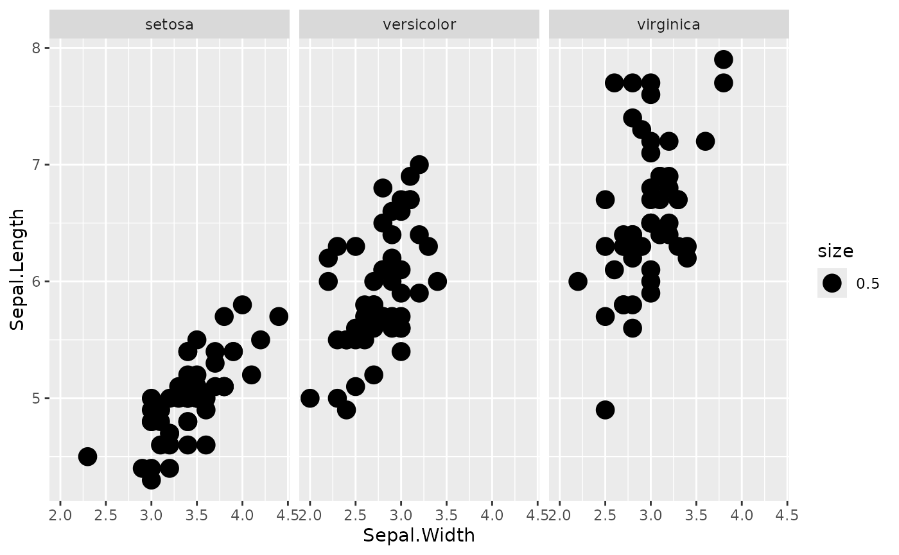

Creating a new Module
a05-creating-a-new-module.RmdThe ShinyModule Class
The ShinyModule class is an interface to be inherited to
create modules. The module class does some simple, yet convenient
things:
- It stores the
appIdused forshiny::NS()orsession$ns(). - It stores the
moduleNameor rather the class name of the module. - It stores the
instanceIdof the class. - It stores the
parentNamespaceof a parent module. - It enables you to use the re-use references for similar outputs in
different modules. The
ShinyModulewill add the correct namespacing for you when you useshiny::NS()
Overrides
When inheriting the ShinyModule class it is expected
that you override the UI() and / or server()
methods. The UI() method should return something akin to a
shiny::tagList(). By default they are defined, but do
nothing. This allows for just rendering simple text in a module, without
any back-end like the DarwinShinyModules::Text module. Or a
static image.
Defining a new module
The base interface of creating a new module would be this:
library(DarwinShinyModules)
MyModule <- R6::R6Class(
classname = "MyModule",
inherit = ShinyModule,
private = list(
# Override UI()
.UI = function() {},
# Override server()
.server = function(input, output, session) {}
)
)As you can see it is a new R6 class inheriting from
DarwinShinyModules::ShinyModule with a UI and
a server method. For a new module you can either directly
add functionality to these functions, and use private and
active fields and methods within the R6
framework. Or if you are more familiar with functions, you may want to
call your own server and ui functions in the
module, like so:
library(DarwinShinyModules)
library(shiny)
myUi <- fluidPage(
tableOutput(outputId = shiny::NS("id", "table"))
)
myServer <- function(input, output, session) {
output$table <- renderTable({
head(iris)
})
}
MyModule <- R6::R6Class(
classname = "MyModule",
inherit = ShinyModule,
private = list(
# Override UI()
.UI = function() {
myUi
},
# Override server()
.server = function(input, output, session) {
myServer(input, output, session)
}
)
)Let’s remake MyModule putting all the functionality
directly on the module, and see what extra funcionality and information
exists on the module. In this module I want to:
- Display the
head()of theirisdata frame, using"myTable"as theinput/outputreference. - Display the
appId,moduleName, andinstanceId, using"moduleData"as theinput/outputreference.
library(DarwinShinyModules)
MyModule <- R6::R6Class(
classname = "MyModule",
inherit = ShinyModule,
active = list(
# Additional active binding field, to fetch the private field .data
data = function() return(private$.data)
),
private = list(
# Additional private field, containing the `iris` data.frame
.data = iris,
# Override UI()
.UI = function() {
shiny::tagList(
# Output a table "input$app-MyModule_ABCDEFGHIJ__myTable"
shiny::tableOutput(outputId = shiny::NS(private$.namespace, "myTable")),
# Output HTML "input$app-MyModule_ABCDEFGHIJ_moduleData"
shiny::uiOutput(outputId = shiny::NS(private$.namespace, "moduleData"))
)
},
# Override server()
.server = function(input, output, session) {
output$myTable <- shiny::renderTable({
head(private$.data)
})
# Render the HTML to "MyModule_ABCDEFGHIJ_moduleData"
output$moduleData <- shiny::renderUI({
shiny::HTML(paste(
sprintf("App ID: %s", private$.moduleId),
sprintf("Module Name: %s", private$.moduleName),
sprintf("Instance ID: %s", private$.instanceId),
sep = "<br/>"
))
})
}
)
)To initialize our module object we call the new() method
on our defined MyModule:
module <- MyModule$new()To see what the module contains we can simply print()
the module instance:
print(module)
#> <MyModule>
#> Inherits from: <ShinyModule>
#> Public:
#> clone: function (deep = FALSE)
#> data: active binding
#> initialize: function ()
#> instanceId: active binding
#> moduleId: active binding
#> moduleName: active binding
#> namespace: active binding
#> parentNamespace: active binding
#> reactiveValues: active binding
#> server: function (input, output, session)
#> UI: function ()
#> validate: function ()
#> Private:
#> .data: data.frame
#> .init: function ()
#> .instanceId: SwlKLU5Ed6ieYxombQ_X
#> .moduleId: MyModule-SwlKLU5Ed6ieYxombQ_X
#> .moduleName: MyModule
#> .namespace: MyModule-SwlKLU5Ed6ieYxombQ_X
#> .parentNamespace: NULL
#> .reactiveValues: NULL
#> .server: function (input, output, session)
#> .UI: function ()
#> checkMethodOverrides: function ()
#> finalize: function ()
#> makeInstanceId: function (n = 20)There are several items listed under Public: appId,
clone(), data, id()
initialize(), instanceId,
moduleName, server(), UI(), and
validate(). Note that appId,
data, instanceId, and moduleName
have a Private counter parts: .appId, .data,
.instanceId, moduleName.
We can get the active fields of our module MyModule like
so:
module$moduleId
#> [1] "MyModule-SwlKLU5Ed6ieYxombQ_X"
module$instanceId
#> [1] "SwlKLU5Ed6ieYxombQ_X"
module$moduleName
#> [1] "MyModule"
head(module$data)
#> Sepal.Length Sepal.Width Petal.Length Petal.Width Species
#> 1 5.1 3.5 1.4 0.2 setosa
#> 2 4.9 3.0 1.4 0.2 setosa
#> 3 4.7 3.2 1.3 0.2 setosa
#> 4 4.6 3.1 1.5 0.2 setosa
#> 5 5.0 3.6 1.4 0.2 setosa
#> 6 5.4 3.9 1.7 0.4 setosaNotice that if we initialize multiple instances of the same type of
module the instanceId is different per instance:
mod1 <- MyModule$new()
mod2 <- MyModule$new()
mod3 <- MyModule$new()
mod1$instanceId
#> [1] "uRHfdV8IyvQgF7i1jX4q"
mod2$instanceId
#> [1] "Z4vEafHYT6yUXKhGFRsB"
mod3$instanceId
#> [1] "BVkzIbwPcLd3aMfvs5NX"We can spin up a simple shiny app using our module:
ui <- shiny::fluidPage(
module$UI()
)
server <- function(input, output, session) {
module$server(input, output, session)
}
shiny::shinyApp(ui, server)Multiple Modules in one ShinyApp
We can also combine multiple modules into one ShinyApp.
We can make a new module called: MyModule2 which
inherits from MyModule. I want the module to be exactly the
same, but instead of looking at the iris data, I want to
look at mtcars.
MyModule2 <- R6::R6Class(
classname = "MyModule2",
inherit = MyModule,
private = list(
.data = mtcars
)
)
# initialize a MyModule2 instance
module2 <- MyModule2$new()We can spin up a new ShinyApp:
ui <- shiny::fluidPage(
module$UI(),
module2$UI()
)
server <- function(input, output, session) {
module$server(input, output, session)
module2$server(input, output, session)
}
shiny::shinyApp(ui, server)Nesting modules
Modules may be nested in other modules. The nested modules can communicate data to one another.
Let’s conciser the following plot function, for the iris
dataset. We add an arbitrary size column for this example, which we will
manipulate later to change the plot.
data <- iris
data$size <- 0.5
plotFun <- function(data) {
ggplot2::ggplot(data = data) +
ggplot2::geom_point(mapping = ggplot2::aes(x = Sepal.Width, y = Sepal.Length, size = size)) +
ggplot2::facet_grid(. ~ Species)
}
plotFun(data)
What we will do is create two modules, a Table and
plotStatic module, in a parent module,
ExampleModule.
Let’s create our base module first: ExampleModule.
ExampleModule <- R6::R6Class(
classname = "ExampleModule",
inherit = ShinyModule,
private = list(
.UI = function() {},
.server = function(input, output, session) {}
)
)We can now add our modules that we want to nest into this
ExampleModule, when the module is initialized.
ExampleModule <- R6::R6Class(
classname = "ExampleModule",
inherit = ShinyModule,
public = list(
# We are overriding the initialize of `ShinyModule` here
initialize = function(data) {
# So we call `super$initialize()` to make sure we still initialize properly
super$initialize()
# We are now free to add extra things
# We add a `Table` module, with the `iris` data set, with no title.
private$.table <- Table$new(data = data, title = NULL)
# We add a `PlotStatic` module with same data, also the `iris` dataset.
private$.plot <- PlotStatic$new(fun = plotFun, args = list(data = data))
# In order to add the `private$.table` and `private$.plot` we add them to
# our private environment. So they are accessable in all other methods
# like the `.server()` and `.UI()` methods.
# in order to make sure the namespacing is done correctly, we must update
# the `parentNamespace` fields in both the `Table` and `PlotStatic` modules.
# The `parentNamespace` is the namespace of the overarching module, which
# we can access with `self$namespace`
private$.table$parentNamespace <- self$namespace
private$.plot$parentNamespace <- self$namespace
}
),
private = list(
# We MUST initialize the private fields. This makes sure the fields exist
# when we write to them in `initialize()`.
.table = NULL,
.plot = NULL,
.UI = function() {},
.server = function(input, output, session) {}
)
)With our modules added, we can call their respective
server() and UI() methods in our module.
ExampleModule <- R6::R6Class(
classname = "ExampleModule",
inherit = ShinyModule,
public = list(
initialize = function(data) {
super$initialize()
# Create modules
private$.table <- Table$new(data = data, title = NULL)
private$.plot <- PlotStatic$new(fun = plotFun, args = list(data = data))
# Set `parentNamespace`
private$.table$parentNamespace <- self$namespace
private$.plot$parentNamespace <- self$namespace
}
),
private = list(
.table = NULL,
.plot = NULL,
.UI = function() {
# We must wrap the individual components in something like a `tagList()`,
# `fluidPage()`, or something similar.
shiny::tagList(
private$.plot$UI(),
private$.table$UI()
)
},
.server = function(input, output, session) {
private$.plot$server(input, output, session)
private$.table$server(input, output, session)
}
)
)And now that we have something to look at, let’s preview our module
mod <- ExampleModule$new(data = data)
preview(mod)The Table and PlotStatic modules are now
independent from one another. However, we can change that by adding some
extra code in the .server() method.
ExampleModule <- R6::R6Class(
classname = "ExampleModule",
inherit = ShinyModule,
public = list(
initialize = function(data) {
super$initialize()
# Create modules
private$.table <- Table$new(data = data, title = NULL)
private$.plot <- PlotStatic$new(fun = plotFun, args = list(data = data))
# Set `parentNamespace`
private$.table$parentNamespace <- self$namespace
private$.plot$parentNamespace <- self$namespace
}
),
private = list(
.table = NULL,
.plot = NULL,
.UI = function() {
shiny::tagList(
private$.plot$UI(),
private$.table$UI()
)
},
.server = function(input, output, session) {
private$.plot$server(input, output, session)
private$.table$server(input, output, session)
# `private$.table$bindings$rows_selected` is a binding exposed by the
# `Table` module. It is a binding from the `DT` package that allows is to
# see which rows are selected in the table. We can observe this specific
# event with `observeEvent()`
shiny::observeEvent(private$.table$bindings$rows_selected, {
# The `PlotX` modules expose an `args` binding to get access to it's
# arguments that it uses for plotting. Our `data` argument is there that
# we specified in `plotFun()`
private$.plot$args$data[, "size"] <- 0.5
# We reset the `size` to 0.5 whenever the event triggers.
# We then fetch the rows which rows are selected in the `Table` module
selectedRows <- private$.table$bindings$rows_selected
# We then update the`"size"` column to change the size to `10` for all
# the selected rows.
private$.plot$args$data[selectedRows, "size"] <- 10
})
}
)
)We can preview our module again.
mod <- ExampleModule$new(data = data)
preview(mod)We can see that if we select rows in our table, the size updates in the plot for the selected row.
All the code we used then looks like this:
# Format data
data <- iris
data$size <- 0.5
# Plot function
plotFun <- function(data) {
ggplot2::ggplot(data = data) +
ggplot2::geom_point(mapping = ggplot2::aes(x = Sepal.Width, y = Sepal.Length, size = size)) +
ggplot2::facet_grid(. ~ Species)
}
# Module definition
ExampleModule <- R6::R6Class(
classname = "ExampleModule",
inherit = ShinyModule,
public = list(
initialize = function(data) {
super$initialize()
# Create modules
private$.table <- Table$new(data = data, title = NULL)
private$.plot <- PlotStatic$new(fun = plotFun, args = list(data = data))
# Set `parentNamespace`
private$.table$parentNamespace <- self$namespace
private$.plot$parentNamespace <- self$namespace
}
),
private = list(
.table = NULL,
.plot = NULL,
.UI = function() {
shiny::tagList(
private$.plot$UI(),
private$.table$UI()
)
},
.server = function(input, output, session) {
# Pre-specified plot and table code
private$.plot$server(input, output, session)
private$.table$server(input, output, session)
# Communication code
shiny::observeEvent(private$.table$bindings$rows_selected, {
private$.plot$args$data[, "size"] <- 0.5
selectedRows <- private$.table$bindings$rows_selected
private$.plot$args$data[selectedRows, "size"] <- 10
})
}
)
)